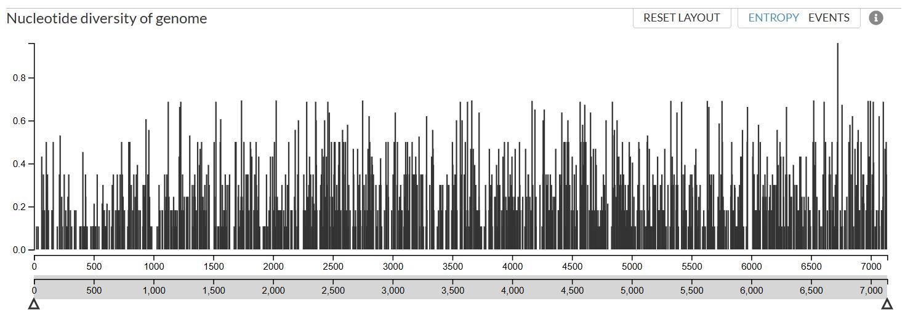

Generating Phylodynamic Trees
While phylogenetic and phylodynamic trees both depict evolutionary relationships, phylodynamic trees incorporate temporal information and epidemiological models to understand how evolutionary patterns arise in the context of time and population dynamics, often using time-scaled trees.
We can apply the augur pipeline on Nextstrain to generate these timetrees. Augur is composed of a series of modules and different workflows which use different parts of the pipeline. A selection of the different input and output files are illustrated below.

Nextstrain maintains analyses of several selected pathogens, such as SARS-CoV-2 and influenza to show pathogen evolution and epidemic spread. Nextstrain continually update sequencing data for selected pathogens as new data is made publicly available. Automated pipelines are available for the following viral targets:

1 Nextstrain - pre-set automated pipeline
Please follow the steps for running an automated pipeline for the above pre-set targets on Nextstrain here.
For the purpose of this guide, we will now follow an example automated workflow for mpox
It would be a good idea to have all our Nextstrain builds in the same folder. Please create one now if you have not already done so.
cd /mnt/viro0002-data/sequencedata/processed/Diagnostics_metagenomics/
mkdir Nextstrain_buildsYou also need to be in the right environment:
conda deactivate nanopore_diagnosticsconda activate nextstrain20251.1 Download the references
You first need to go to the Nextstrain github page for your virus of interest. We will use mpoxas an example.
 Click Code and then Download ZIP. This zip contains all your scripts you need for the pipeline.
Click Code and then Download ZIP. This zip contains all your scripts you need for the pipeline.
Now extract and save your zipped file (in this case mpox-master) in our newly created folder Nextstrain_builds.
You now need to download all the curated reference sequences (these sequences are continually updated as new sequences become available). As the scripts contained in mpox-master assume you are within the ingest directory, please copy the following command:
cd /mnt/viro0002-data/sequencedata/processed/Diagnostics_metagenomics/Nextstrain_builds/mpox-master/ingest/Now you can “fetch” all the curated reference sequences:
nextstrain build . data/ncbi.ndjson2 Ingest pipeline
Next you will run the “ingest” pipeline. The ingest pipeline in Nextstrain takes raw sequence data (e.g., from NCBI) and filters, standardizes and outputs cleaned fasta and metadata files named “sequences.fasta” and “metadata.tsv”. These are your input files for the next pipeline.
nextstrain build .Check these two files have been created.
cd /mnt/viro0002-data/sequencedata/processed/Diagnostics_metagenomics/Nextstrain_builds/mpox-master/ingest/results/
ls2.1 Now its time to add your sequences and metadata
First add your individual fasta sequence(s) of interest to the “/mnt/viro0002-data/sequencedata/processed/Diagnostics_metagenomics/Nextstrain_builds/mpox-master/ingest/results/” folder. The sequence name and file name should match. To check the sequence name, open with bioedit, Aliview or notepad.
You next need to combine your downloaded reference fasta (named sequences.fasta) with your sequence(s) of interest (in this case we will use sample.fasta)
cd /mnt/viro000-data/sequencedata/processed/Diagnostics_metagenomics/Nextstrain_builds/mpox-master/ingest/results/
cat Sample.fasta >> sequences.fastaRemember cat just means concatenate.
- You also need to combine your downloaded reference metadata (metadata.tsv) with the metadata of your virus of interest
The following image offers an example of the metadata layout. In the columns highlighted, please provide data.

Remember to delete the pre-existing data in row two of the excel file (this is just an example) and replace with your own metadata!
The “strain” name should match the fasta file (e.g sample number). If the accession number is unknown, just use the same name as the “strain”. If the “date_released” and “date_updated” are unknown, just use the sampling date and then the date of this analysis. For fields such as clade, coverage and nonACGTN, please upload the sequences onto Nextclade. Just drag and drop the consensus sequences and select the right reference database (in this case mpox).
Save the excel sheet as “new_metadata.txt” (tab-delimited) in the “/mnt/viro0002-data/sequencedata/processed/Diagnostics_metagenomics/Nextstrain_builds/mpox-master/ingest/results/” folder then change the file extension to tsv.
Now run the following command to combine the metadata files:
tail -n +2 new_metadata.tsv >> metadata.tsv🔹–tail -n +2 – skips the first line (header) of the new file.
Below you can see an example of the files:

2.2 Manually add your updated files for the next script
Next you need to copy your updated files (sequence.fasta and metadata.tsv) into another folder (phylogenetic) for the next script:
cp /mnt/viro0002-data/sequencedata/processed/Diagnostics_metagenomics/Nextstrain_builds/mpox-master/ingest/results/sequences.fasta /mnt/viro0002-data/sequencedata/processed/Diagnostics_metagenomics/Nextstrain_builds/mpox-master/phylogenetic/data/
cp /mnt/viro0002-data/sequencedata/processed/Diagnostics_metagenomics/Nextstrain_builds/mpox-master/ingest/results/metadata.tsv /mnt/viro0002-data/sequencedata/processed/Diagnostics_metagenomics/Nextstrain_builds/mpox-master/phylogenetic/data/2.3 Phylogenetic pipeline
Once you have coped over the files, make sure you are in the right folder:
cd /mnt/viro0002-data/sequencedata/processed/Diagnostics_metagenomics/Nextstrain_builds/mpox-master/phylogenetic/Now just run the following command. The phylogenetic pipeline uses the cleaned fasta and metadata from ingest, aligns sequences, builds and refines a phylogenetic tree, annotates it with traits or mutations, and outputs an Auspice JSON ready for interactive visualization.
nextstrain build .Just let the script run.
2.4 Visualization
Once the script has finished, please run the following command. This will open your phylodynamic tree on a web browser for visualization.
nextstrain view .Use the filter to find your sequences (zoom into the tree by clicking branches). Play around with the different metadata fields (e.g. country, genotype etc.), tree layouts and branch lengths (time and divergence).

Remember to update all paths for each target or sequence of interest!
3 Nextstrain - creating your own pipeline
If your selected target is not available, don’t worry! It will take a little bit more effort, but we can make our own pipeline. For more information click here
There are quite a few commands in the pipeline so lets break it up!
For the purpose of this guide, we will again use rhinovirus A as a study virus.
Make sure you have read through and completed any tasks in the Preparation and Reference collection chapter!
You first need to be in the right environment
conda activate nextstrain2025While a Snakemake workflow could be created, the parameters often vary between pathogens. For now, this step is performed ad hoc (and within your sample folder of interest).
We will now add an additional folder for Nextstrain within your barcode of interest.
cd /mnt/viro0002-data/sequencedata/processed/Diagnostics_metagenomics/Viro_Run_0001/barcode01/
mkdir NextstrainAll your input files should be in this folder. If you have also created a phylogenetic tree in the previous chapter, your input sequences and metadata file will be in the folder “Tree”. You need to move them into the new “Nextstrain” folder!
3.1 Make sure you are in the right path
cd /mnt/viro0002-data/sequencedata/processed/Diagnostics_metagenomics/Viro_Run_0001/barcode01/Nextstrain/3.2 Indexing
This step prepares your input sequences by indexing them, making it easier and faster for downstream tools to look up and access specific entries efficiently.
augur index --sequences RVA_sequences.fasta –output index.tsv🔹–sequences RVA_sequences.fasta – Input FASTA file containing RVA sequences.
🔹–output index.tsv – Generates an indexed TSV file of the sequences for downstream reference.
3.3 Aligning
Aligns all your sequences to a common reference frame so that they’re directly comparable, base by base. This is necessary for identifying mutations and building a phylogenetic tree.
augur align --sequences RVA_sequences.fasta --output sequences_aligned.fasta --fill-gaps🔹–sequences RVA_sequences.fasta – Input unaligned nucleotide sequences.
🔹–output sequences_aligned.fasta – Output aligned sequences in FASTA format.
🔹–fill-gaps – Fills internal alignment gaps with reference characters for consistency.
Always check the alignment file (using bioedit or aliview). You may need to remove reference sequences which are problematic. Remember to also remove or update these references in the metadata.tsv file and re-run the alignment.
3.4 Generating a raw tree
Constructs a basic phylogenetic tree from the aligned sequences using a selected algorithm (e.g., IQ-TREE). This tree shows the relationships between sequences based on their similarity.
augur tree --alignment sequences_aligned.fasta --output tree_raw.nwk --substitution-model GTR+G --method iqtree --nthreads 16🔹–alignment sequences_aligned.fasta – Input aligned FASTA file.
🔹–output tree_raw.nwk – Outputs a raw tree in Newick format.
🔹–substitution-model GTR+G – Sets the substitution model to General Time Reversible with Gamma-distributed rate variation.
🔹–method iqtree – Uses IQ-TREE as the inference engine.
🔹–nthreads 16 – Allocates 16 CPU threads.
The substitution-model may need to be updated depending on the test or target. GTR+G is a typical model used.
3.5 Refining the tree
This is one of the most important steps. It improves the initial tree by:
-Calibrating it against sample collection dates to build a time-scaled phylogeny.
-Correcting uncertain or poor-quality branches.
-Estimating how the sequences evolved over time.
-Incorporating metadata to enrich tree interpretation
augur refine --tree tree_raw.nwk k --alignment sequences_aligned.fasta --metadata meta_data.tsv --output-tree tree.nwk --output-node-data branch_lengths.json --timetree --coalescent skyline --covariance --precision 3 --date-confidence --date-inference marginal --branch-length-inference auto --clock-filter-iqd 0 --divergence-unit mutations-per-site --stochastic-resolve🔹–tree tree_raw.nwk – Input raw tree.
🔹–alignment sequences_aligned.fasta – Same alignment used in tree generation.
🔹–metadata meta_data.tsv – Sample metadata file with collection dates, genotypes, etc.
🔹–output-tree tree.nwk – Refined tree output.
🔹–output-node-data branch_lengths.json – Stores branch length data for visualization.
🔹–timetree – Converts the tree into a time-resolved tree using sample dates.
🔹–coalescent skyline – Uses a skyline coalescent model for demographic inference.
🔹–covariance – Enables covariance-aware date inference.
🔹–branch-length-inference auto – Lets Augur choose best branch length method.
🔹–clock-filter-iqd 0 – Filters outlier sequences by interquartile deviation (set to 0 to disable).
🔹–divergence-unit mutations-per-site – Units used for tree scale.
🔹–stochastic-resolve – Randomly resolves polytomies for better visualization.
Depending on the target or test, you may need to update these parameters.
3.5.1 Additional help with selecting parameters for the “refine” step:
🔹 –coalescent – This models how the tree should behave in time:
skyline: assumes population size changes over time (flexible, good for outbreaks).
constant: assumes a constant population size over time.
Use skyline if you expect varying infection rates or changing sampling over time.
🔹 –branch-length-inference – Controls how the branch lengths (evolutionary distances) are interpreted:
auto: lets Augur decide the best method.
joint: all branch lengths are estimated together for best overall fit.
marginal: branch lengths are optimized one node at a time (faster, less precise).
Stick with auto unless you’re troubleshooting.
🔹 –clock-filter-iqd – This removes outlier sequences that don’t fit the molecular clock:
Value of 0 disables it. Use 0 when you see strange branching or inconsistent sample dates.
Typical values: 2 or 4 to exclude sequences with timing or mutation issues.
🔹 –precision – Controls numeric rounding (e.g., for branch lengths, mutation counts):
3 is standard (0.001 resolution).
You can increase to 5 for greater detail, or lower for simplicity.
3.6 Adding traits
Maps sample metadata (like genotype or country) onto the tree to track how traits evolve or spread over time and geography. Useful for epidemiological insights.
augur traits --tree tree.nwk --metadata meta_data.tsv --columns genotype country --output-node-data traits.json –confidence🔹–tree tree.nwk – Input refined tree.
🔹–metadata meta_data.tsv – Metadata with traits (like genotype or country).
🔹–columns genotype country – Traits to be inferred and displayed.
🔹–output-node-data traits.json – Outputs node trait information.
🔹–confidence – Adds confidence estimates for trait assignment.
Traits are extracted from the metadata.tsv file. In this example, the traits used are genotype and country, which must exist as columns in your metadata file. Be sure to update the command to match the columns available in your own metadata.tsv.
3.7 Adding mutation data
Infers what the ancestral sequences probably looked like at each node of the tree and what mutations occurred along each branch (at the nucleotide level).
augur ancestral --tree tree.nwk --alignment sequences_aligned.fasta --output-node-data nt_muts.json --inference joint🔹–tree tree.nwk – Refined tree input.
🔹–alignment sequences_aligned.fasta – Aligned sequences.
🔹–output-node-data nt_muts.json – Outputs inferred nucleotide mutations.
🔹–inference joint – Uses joint inference (best for overall consistency).
3.8 Adding protein data
Converts inferred nucleotide mutations into amino acid changes (protein mutations), which are often more biologically meaningful.
augur translate --tree tree.nwk --ancestral-sequences nt_muts.json --reference-sequence FJ445111.gb --output-node-data aa_muts.json🔹–tree tree.nwk – Phylogenetic tree.
🔹–ancestral-sequences nt_muts.json – File with nucleotide mutations.
🔹–reference-sequence FJ445111.gb – GenBank reference for translation. In our case, FJ445111.gb is for RVA. Remember to update!
🔹–output-node-data aa_muts.json – Outputs amino acid mutations.
Remember to update the reference gb sequence. This is typically a root or prototype strain—such as the Fermon strain for EV-D68 or the Wuhan reference strain for SARS-CoV-2. If unsure, use an official curated reference from RefSeq. Place the gb sequence in the same folder before running the command.
3.9 Exporting
Packages all tree, metadata, mutation and trait data into a .json file that can be visualized using Auspice, the interactive Nextstrain viewer
augur export v2 --tree tree.nwk --metadata meta_data.tsv --node-data branch_lengths.json traits.json nt_muts.json aa_muts.json --output final_output.json --color-by-metadata genotype country🔹–tree tree.nwk – Tree file for final visualization.
🔹–metadata meta_data.tsv – Sample metadata.
🔹–node-data … – Adds all prior data files (traits, mutations and branch lengths).
🔹–output final_output.json – Combined JSON for Auspice visualization.
🔹–color-by-metadata genotype country – Defines traits for coloring in the final tree.
–color-by-metadata parameter must match your metadata.tsv file. The example includes “genotype” and “country”. These must be columns present in your metadata.tsv file.
3.10 Visulization
Follow this link to open auspice. Auspice allows an interactive exploration of phylogenomic datasets by simply dragging & dropping.
Drag and drop the final_output.json file onto the webpage. This file contains all your sequencing and metadata.

Use the filter to find your sequences (zoom into the tree by clicking branches). Play around with the different metadata fields (e.g. country, genotype etc.), tree layouts and branch lengths (time and divergence).
If the tree doesn’t appear accurate, you may need to spend more time adjusting the reference sequences or fine-tuning the parameters.
If you scroll to the end of aupice, you will also see the nucleotide diversity per site.

You now have your phylodynamic tree!